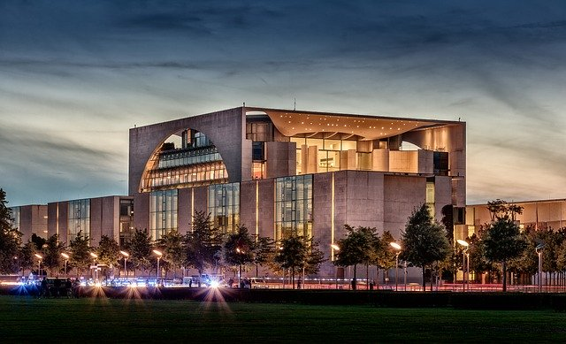

Deutschland
Germany or Deutschland as it is referred to in German, is the largest leading economic power in Europe and is the second most populated country in Europe. Germany is a global leader in several technology sectors and industrial sectors.
Germany has a long and rich history, some of which is very dark but is none the less important. The current form of Germany referred to as the Federal Repulic of Germany was established in 1949.
The current established government of Germany is a federal, parliamentary, representative democratic republic. The current President of Germany is Frank-Walter Steinmeier. The parliament of Germany is made up of the Bundestag and the Bundersrat.

Germany Post-World War 2 was split into East and West, Berlin as the previous capital was also split into East and West. The infamous Berlin Wall fell on the 9 of November 1989. Though pieces of it still stand today as a reminder of the harsh prices paid for the crimes the country committed.
Germany has several sites to see the Brandenburg Gate in Berlin, the Cathedral of St. Peter and St. Mary in Cologne, the Black Forest, and of course the Berlin Wall Exibtion to name a few.